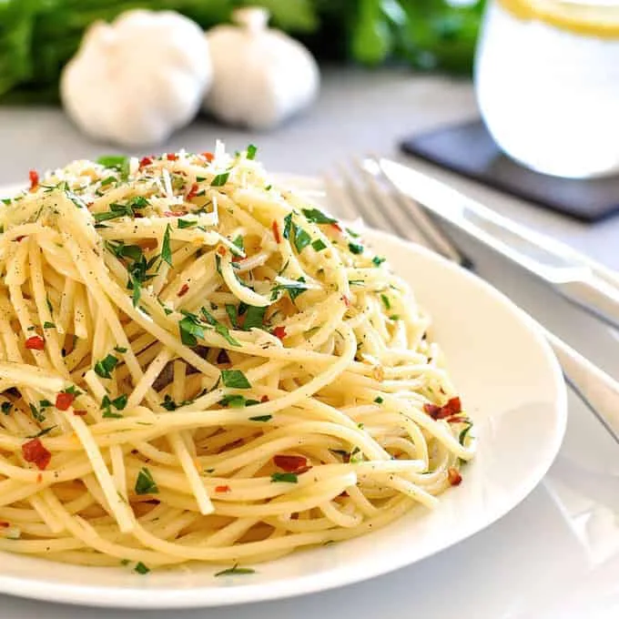

Image Source:www.recipetineats.com
There is a wide variety of Pasta through out the world. But on this we talk about the most favourite foods. So my favouurite Pasta is Aglio olio. Spaghetti aglio e olio is a fast and simple pasta dish made by tossing al dente spaghetti in warm garlic-infused olive oil and red chili flake
It's no use to talk about Ingredients cause this recipe's ingredients may vary with the taste of each other. So to be honest I'm not gonna write a Ingredients section